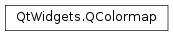

QColormap¶
Detailed Description¶
ThePySide2.QtWidgets.QColormapclass maps device independent QColors to device dependent pixel values.
-
class
PySide2.QtWidgets.QColormap(colormap)¶ Parameters: colormap – PySide2.QtWidgets.QColormapConstructs a copy of another
colormap.
-
PySide2.QtWidgets.QColormap.Mode¶ This enum describes how
PySide2.QtWidgets.QColormapmaps device independent RGB values to device dependent pixel values.Constant Description QColormap.Direct Pixel values are derived directly from the RGB values, also known as “True Color.” QColormap.Indexed Pixel values represent indexes into a vector of available colors, i.e. PySide2.QtWidgets.QColormapuses the index of the color that most closely matches an RGB value.QColormap.Gray Similar to Indexed, pixel values represent a vector of available gray tones.PySide2.QtWidgets.QColormapuses the index of the gray tone that most closely matches the computed gray tone of an RGB value.
-
static
PySide2.QtWidgets.QColormap.cleanup()¶
-
PySide2.QtWidgets.QColormap.colorAt(pixel)¶ Parameters: pixel – PySide2.QtCore.uintReturn type: PySide2.QtGui.QColorReturns a
PySide2.QtGui.QColorfor thepixel.See also
-
PySide2.QtWidgets.QColormap.colormap()¶ Return type: Returns a vector of colors which represents the devices colormap for
IndexedandGraymodes. This function returns an empty vector forDirectmode.See also
-
PySide2.QtWidgets.QColormap.depth()¶ Return type: PySide2.QtCore.intReturns the depth of the device.
See also
-
static
PySide2.QtWidgets.QColormap.initialize()¶
-
static
PySide2.QtWidgets.QColormap.instance([screen=-1])¶ Parameters: screen – PySide2.QtCore.intReturn type: PySide2.QtWidgets.QColormapReturns the colormap for the specified
screen. Ifscreenis -1, this function returns the colormap for the default screen.
-
PySide2.QtWidgets.QColormap.mode()¶ Return type: PySide2.QtWidgets.QColormap.ModeReturns the mode of this colormap.
See also
QColormap.Mode
-
PySide2.QtWidgets.QColormap.pixel(color)¶ Parameters: color – PySide2.QtGui.QColorReturn type: PySide2.QtCore.uintReturns a device dependent pixel value for the
color.
-
PySide2.QtWidgets.QColormap.size()¶ Return type: PySide2.QtCore.intReturns the size of the colormap for
IndexedandGraymodes; Returns -1 forDirectmode.
© 2018 The Qt Company Ltd. Documentation contributions included herein are the copyrights of their respective owners. The documentation provided herein is licensed under the terms of the GNU Free Documentation License version 1.3 as published by the Free Software Foundation. Qt and respective logos are trademarks of The Qt Company Ltd. in Finland and/or other countries worldwide. All other trademarks are property of their respective owners.